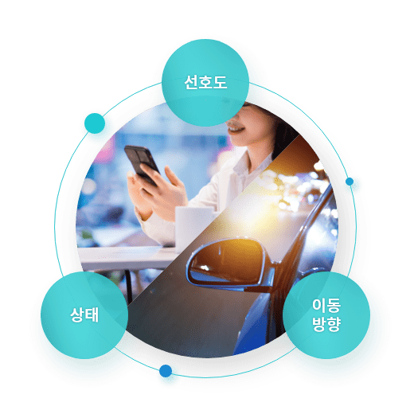
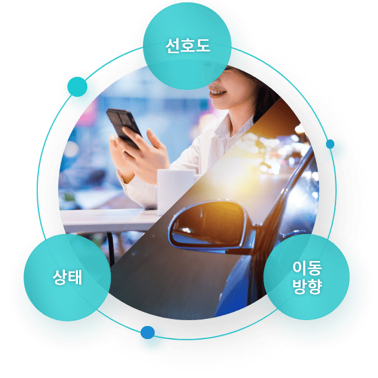
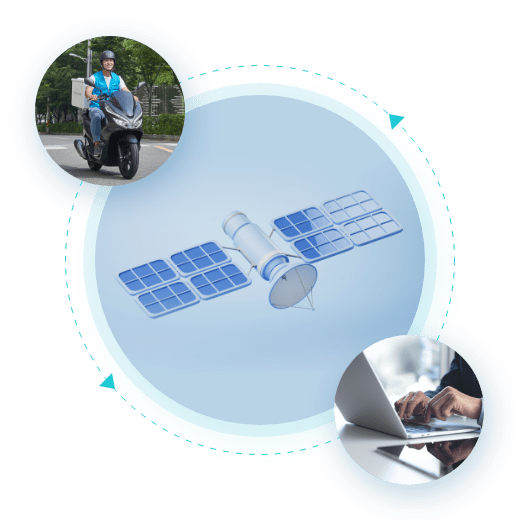
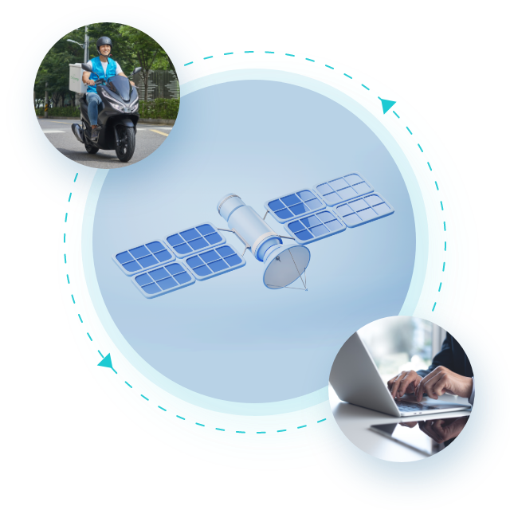
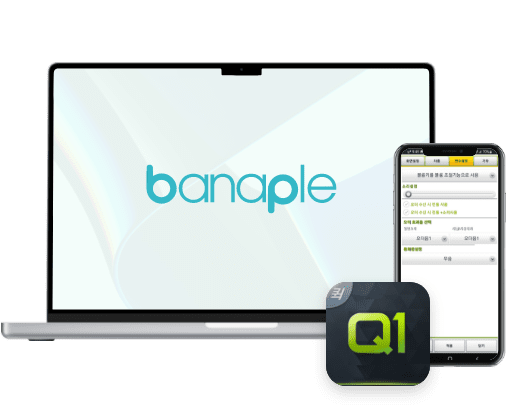
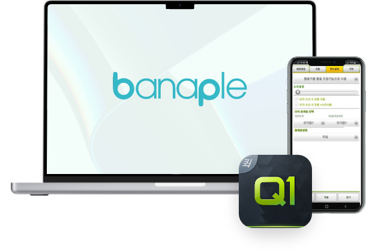

바나플은 10년 이상의 시간을 거쳐 보다 안정되고
고객에게 최적화된 퀵서비스 통합 솔루션을 제공하고 있습니다.
바나플은 10년 이상의 시간을 거쳐
보다 안정되고 고객에게
최적화된 퀵서비스 통합 솔루션을
제공하고 있습니다.
세계 최초로 퀵서비스 오더처리를 위한 통합 솔루션을 개발하여, 전국의 수많은 퀵서비스업체에서 도입하여 사용 중에 있습니다.
퀵서비스로 물건 배송을 의뢰시에 최적의 배차 시스템으로 고객님들의 물품을 빠르게 배송 시키고 있습니다.
또한 PC나 스마트폰에서 간단한 어플 사용만으로 퀵서비스 오더를 주문할 수 있고,
배송 기사의 위치를 실시간으로 추적 할 수 있도록 하였습니다.
세계 최초로 퀵서비스 오더처리를 위한
통합 솔루션을 개발하여, 전국의 수많은
퀵서비스업체에서 도입하여 사용 중에 있습니다.
퀵서비스로 물건 배송을 의뢰시에
최적의 배차 시스템으로 고객님들의 물품을
빠르게 배송 시키고 있습니다.
또한 PC나 스마트폰에서 간단한 어플 사용만으로
퀵서비스 오더를 주문할 수 있고,
배송 기사의 위치를 실시간으로
추적 할 수 있도록 하였습니다.
Banaple Quick Service Platform
Banaple
Quick Service Platform
-
고객
전화,APP 웹을 통한
주문 요청
-
업체
업체용 APP과
PC프로그램을 통해
주문 등록 처리
-
서버
업체간 콜 공유 및
자동 배차/배정 시스템
업체간 콜 공유 및
자동 배차/
배정 시스템
-
기사
기사용APP을 통해
서버에 등록된
주문 처리
-
협력사
관리APP과 웹을
통해 발주, 수리
진행과 홍보 가능
바나플의 퀵서비스 플랫폼은 업체간 콜 공유 및 자동 배차 시스템을 통해 업무 생산성을 향상 시키고, 고객에게 최적화된 서비스를 제공할 수 있습니다.
바나플은 고객용 APP/Web 접수 프로그램, 업체용 PC/App 접수 프로그램, 기사 관제 시스템, 접수 프로그램 API 등을 제공하고 있습니다.
-
 
모바일 자동배차 시스템
세계 최고 수준의
모바일 배차/배정 시스템- 스마트폰을 이용하여, 오더를
배차/배정 할 수 있는 시스템입니다. - 대리운전/퀵서비스 시스템에서 제일 많이 활용되고 있으며,
배달/화물/택배 쪽으로 빠르게 확산 적용 되고 있습니다. - 이전에는 단순히 지리적으로 가까운 기사/직원을
배차 하는 시스템 이였다면 자동배차는 기사의 상태,
기사의 선호도, 기사의 이동 방향 등을
고려하여 최적의기사를 서버가 결정하여,
오더를 1:1로 전송해 주는 시스템입니다.
- 스마트폰을 이용하여, 오더를
배차/배정 할 수 있는 시스템입니다. - 대리운전/퀵서비스 시스템에서
제일 많이 활용되고 있으며, 배달/화물/택배
쪽으로 빠르게 확산 적용 되고 있습니다. - 이전에는 단순히 지리적으로
가까운 기사/직원을 배차 하는 시스템 이였다면
자동배차는 기사의 상태, 기사의 선호도,
기사의 이동 방향 등을 고려하여 최적의기사를
서버가 결정하여, 오더를 1:1로 전송해 주는
시스템입니다.
- 스마트폰을 이용하여, 오더를
-
 
모바일 위치 관제 시스템
실시간 대상의 위치를
알려주는 위치 관제 시스템- 모바일 단말기를 이용하여
기사/직원들의 위치를 관제할 수 있습니다. - 실시간 위치관제란, 관제대상의 GPS위치가 변경되었을 때,
실제 위치를 관제하는 클라이언트에서 시간지연 없이
0.1초 이내에 지도상의 대상 위치를 갱신하는 시스템입니다. - 관제대상의 위치가 변경되면
관제자의 PC관제 프로그램의 전자지도에서의
대상 위치 또한 즉시 변경되며, 고속으로 달리는
차량을 관제할 때 상당히 유용합니다.
- 모바일 단말기를 이용하여
기사/직원들의 위치를 관제할 수 있습니다. - 실시간 위치관제란, 관제대상의 GPS위치가
변경되었을 때, 실제 위치를 관제하는
클라이언트에서 시간지연 없이 0.1초 이내에
지도상의 대상 위치를 갱신하는 시스템입니다. - 관제대상의 위치가 변경되면
관제자의 PC관제 프로그램의 전자지도에서의
대상 위치 또한 즉시 변경되며, 고속으로 달리는
차량을 관제할 때 상당히 유용합니다.
- 모바일 단말기를 이용하여
-
스마트 CTI 솔루션
PBX/키폰과 PC 연동으로
응대업무의 효율성 극대화- 센터에서 사용되는 PBX/키폰을 PC와 완벽하게
연동하여 응대 업무의 효율성을 극대화합니다. - 고객 응대 프로그램은 고객 전화가 울릴 때부터
고객의 많은 정보를 표시할 준비를 하며, 어떤 상담원에게
연결 시키는게 최적인지를 결정하거나, 인입콜 중에서
어떤 고객의 전화를 먼저 착신 시킬지도 결정합니다. - 또한, 서비스 지역이 아닌 지역에서 들어오는 전화를
강제차단 할 수 있으며, 링상태에서 타지역업체에게
자동 라우팅을 할 수 있습니다. 자체적으로 개발한
메신저/원격제어 프로그램을 이용하면, 음성통화/인터넷
응대가 조합되어, 최상의 고객지원 서비스가 됩니다.
- 센터에서 사용되는 PBX/키폰을 PC와 완벽하게
연동하여 응대 업무의 효율성을 극대화합니다. - 고객 응대 프로그램은 고객 전화가 울릴 때부터
고객의 많은 정보를 표시할 준비를 하며,
어떤 상담원에게 연결 시키는게 최적인지를
결정하거나, 인입콜 중에서 어떤 고객의 전화를
먼저 착신 시킬지도 결정합니다. - 또한, 서비스 지역이 아닌 지역에서 들어오는
전화를 강제차단 할 수 있으며, 링상태에서
타지역업체에게 자동 라우팅을 할 수 있습니다.
자체적으로 개발한 메신저/원격제어 프로그램을
이용하면, 음성통화/인터넷 응대가 조합되어,
최상의 고객지원 서비스가 됩니다.
- 센터에서 사용되는 PBX/키폰을 PC와 완벽하게
-
 
PC프로그램 다운로드
-
PC 프로그램은 인증키를 입력하시고 승인을 받으셔야
다운받으실 수 있습니다. 바나플의 프로그램은
보안상의 이유로 데모버전을 제공하고 있지 않습니다.
(먼저 전화나 방문상담을 하신 후 인증키를 받으시면,
설치가 가능합니다.) - 모바일 환경에서 더욱 편리하게 사용하는 다양한 앱도 만나보세요.
-
PC 프로그램은 인증키를 입력하시고 승인을
받으셔야 다운받으실 수 있습니다.
바나플의 프로그램은 보안상의 이유로
데모버전을 제공하고 있지 않습니다.
(먼저 전화나 방문상담을 하신 후
인증키를 받으시면, 설치가 가능합니다.) -
모바일 환경에서 더욱 편리하게 사용하는
다양한 앱도 만나보세요.
-
PC 프로그램은 인증키를 입력하시고 승인을 받으셔야